Trabajos en tensión en baja tensión, paso a paso
Cada procedimiento de ejecución del manual se reproduce en 3D con el texto del paso sincronizado y su página de origen. Elige un procedimiento listo y pulsa «Reproducir».
Teoría
Secciones 1 a 4 del manualSin animaciones por ahora; pendiente de incorporar.
1. Introducción
2. Estructuras y componentes de la red de BT
3. Prevención de riesgos eléctricos en la realización de trabajos en tensión en BT
4. Instrucción general de AMYS
5
Procedimientos de ejecución
11 procedimientosCada procedimiento incluye definición, riesgos, medios humanos y materiales, y la secuencia de operaciones previas, ejecución y finales.
A Red aérea convencional
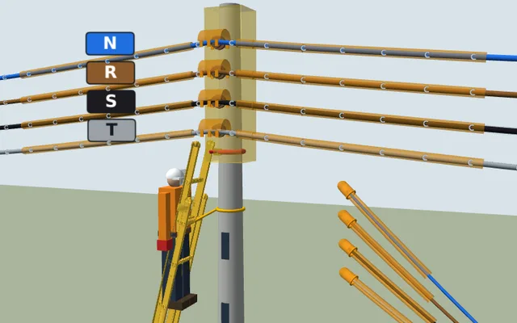
A.1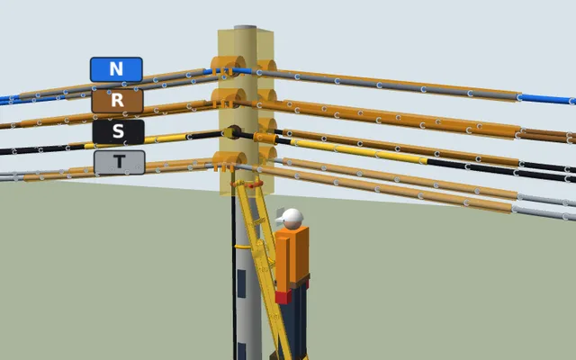
A.2
B Red aérea trenzada
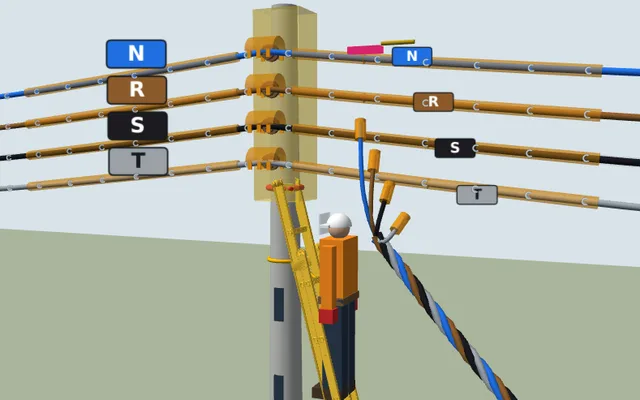
B.1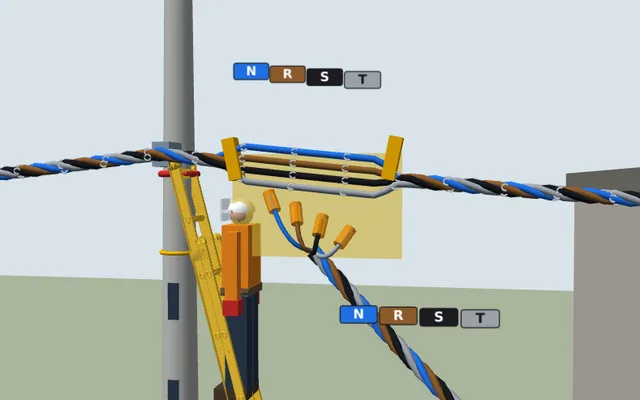
B.2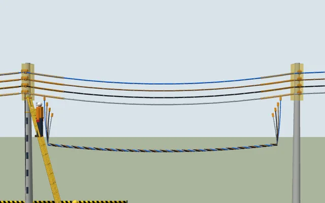
B.3
C Red subterránea
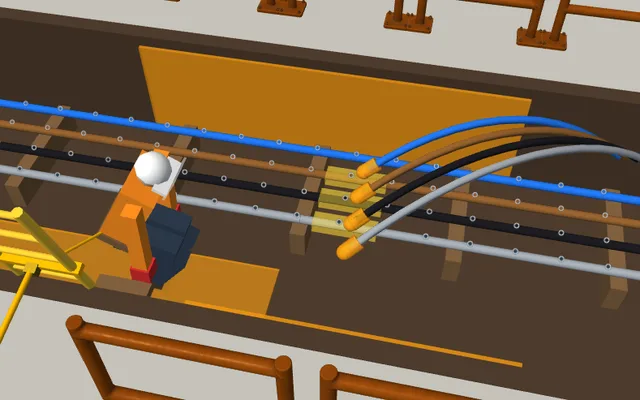
C.1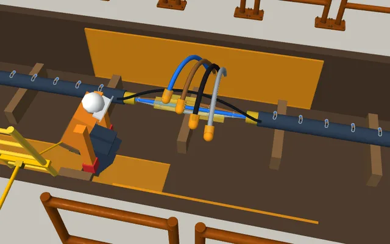
C.2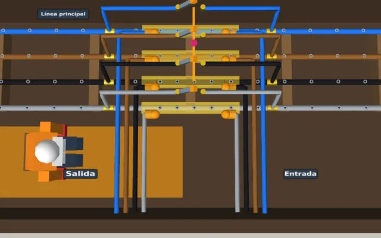
C.3
D Centros de transformación
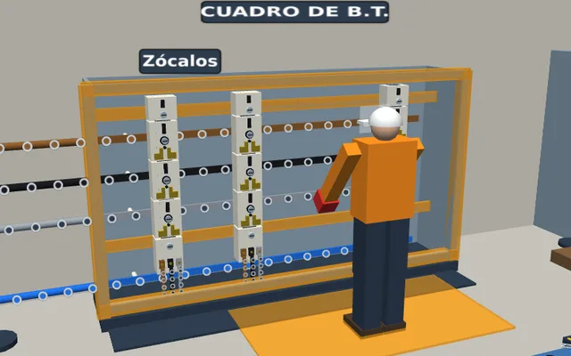
D.1
E Otras instalaciones
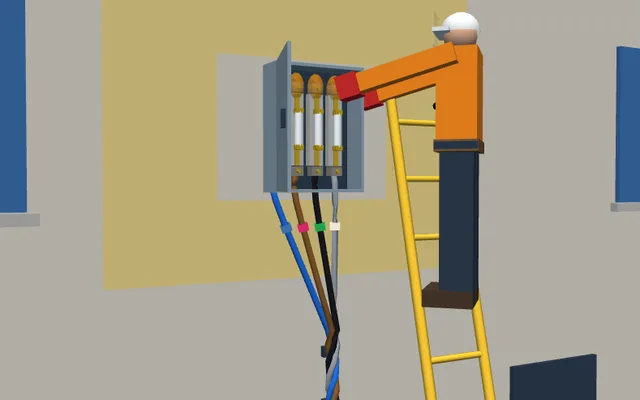
E.1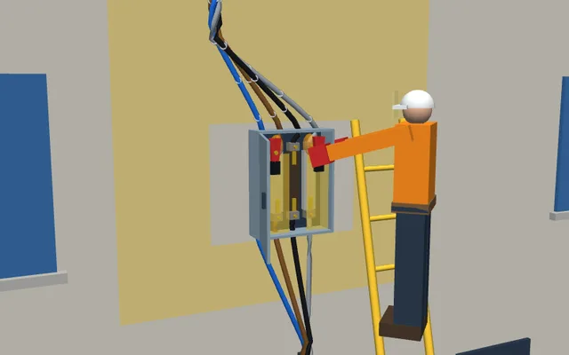
E.2